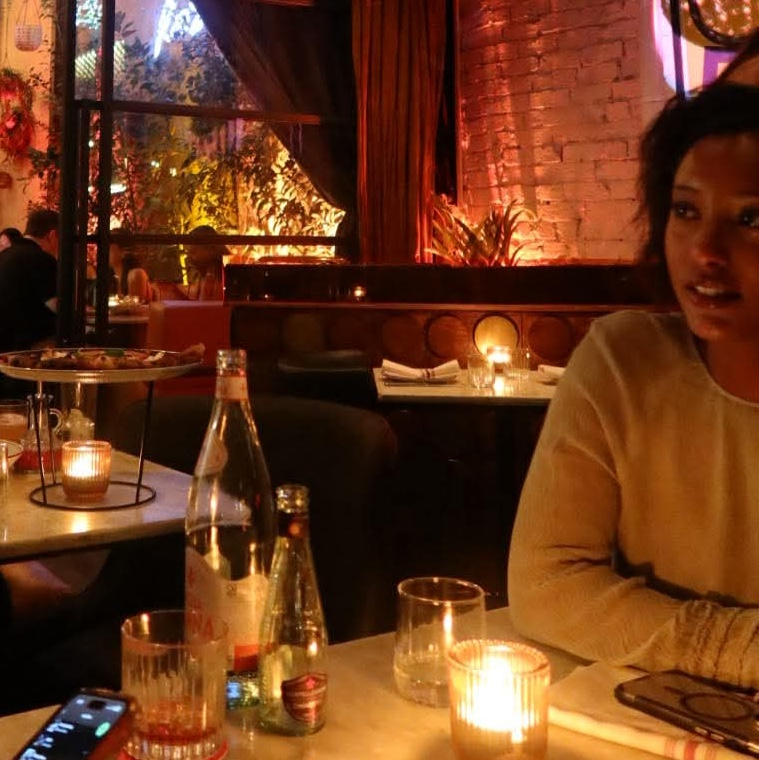

ETHIOPIAN-AUSTRALIAN MELBOURNE BASED GRAPHIC DESIGNER
ABOUT.EDEN
I’m a Melbourne-based designer and media graduate with a strong interest in editorial design, experimental publishing, and web-based outcomes. My work explores how visual language, narrative, and structure come together to create thoughtful, human-centred design.
With a background in media, I approach projects with an understanding of branding, marketing, and communication, considering how messaging, visual identity, and strategy intersect. I’m particularly drawn to interdisciplinary projects where writing, image-making, and interaction inform one another, and I see design as a system that balances clarity with expression.
I’m currently expanding my practice through TouchDesigner and 3D animation, exploring how movement, interaction, and spatial design can extend visual storytelling. This portfolio brings together selected university-led and independent projects that reflect my ongoing interest in design as both a visual and conceptual practice.
Bachelor of Design (Communication Design) / Bachelor of Media Communication (Media)
Monash University
Editorial · Publication · Web · Branding · Campaigns
Seeking graduate / junior design opportunities